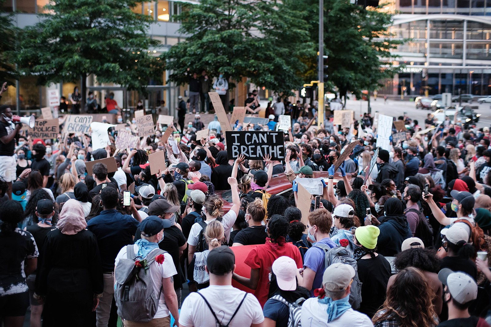

Five Largest Protests in U.S. History

Photo of protestors at a George Floyd protest with one large sign that reads "I Can't Breath." | Source: Dan Aasland - Flickr
The tradition of protests that demand progressive change in the United States continue.
Here are the country's five of the top protests in terms of attendance.
- George Floyd protests nationwide in 2020 with an estimated 26 million protestors.
- Women's March in 2017 derw about 5.6 million people nationwide.
- March for Our Lives, a student-led protest in 2018 against gun violence, drew about 2 million people.
- Women's March in 2018 drew about 1.5 million protestors.
- March on Washington for Lesbian, Gay and Bi Equal Rights and Liberation drew about 1 million people in 1993.
Compiled from Wikipedia